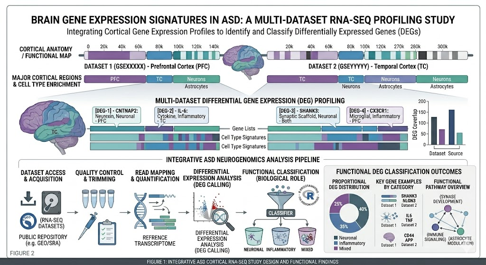

Featured Projects


Neurodiversity
A curated archive on neurodiversity, autism, ADHD and related comorbidities.
View Site
SARS-CoV-2 Variant Analysis
Genome coverage analysis and variant visualization from viral sequencing data.
View Repository


RNA-Seq Analysis
RNA-Seq Analysis of Autism Spectrum Disorder Cerebral Cortex Gene Expression and DEG Classification
View Repository View Repository
View Repository
Tools & Technologies
Tools & Technologies
Programming
- R
- Python
Bioinformatics Packages
- Bioconductor
- VariantAnnotation
- Gviz
- ggplot2
Molecular Biology & Primer Design
- Primer-BLAST
- PerlPrimer
- IDT OligoAnalyzer
Genomic Databases
- NCBI Gene
- RefSeq
- UniProt
Sequence Analysis
- MAFFT
- BLAST
Genomics & NGS
- Next Generation Sequencing (NGS) Analysis
- Variant Calling
- Genomic Data Visualization
- Gene Expression Analysis